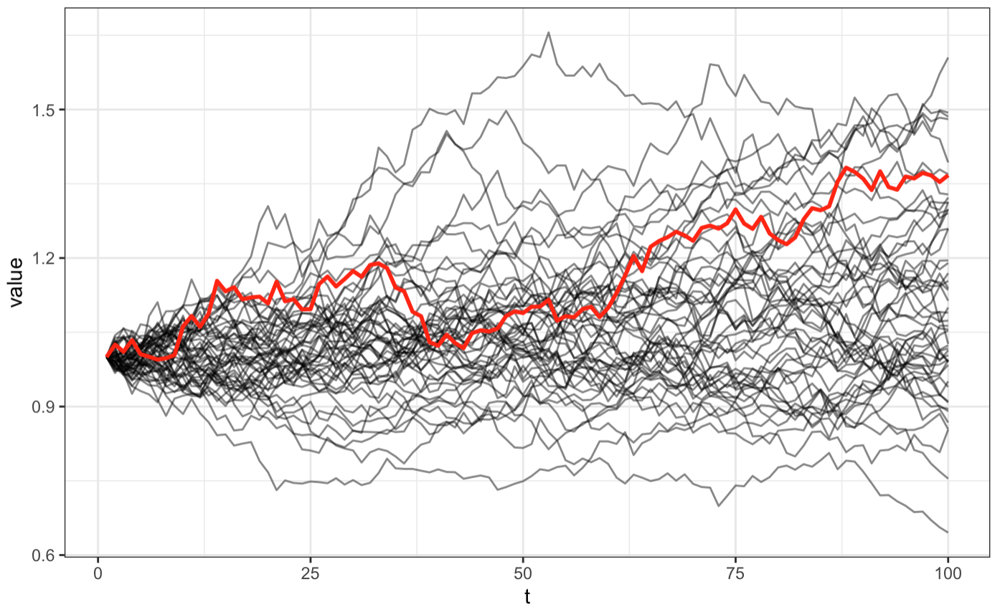

Household Finance
Derivatebewertung
Wie kann man den Preisverlauf einer Aktie oder eines anderen Wertpapiers modellieren?
Der Wert einer Aktie im Zeitpunkt \(t\) sei \(S\). Dann ist der Wert im Zeitpunkt \(t+dt\) gleich \(S+dS\). \(dS\) kann als stochastischer Prozess modelliert werden: \[ \begin{aligned} dS &= \mu S \cdot dt + \sigma S \cdot dW \\ \text{mit }W&\sim N(0, t) \\ dW &\sim N(0, \sqrt{t}) \end{aligned} \] \(\mu\) ist der Drift bzw. die erwartete Rendite der Aktie und \(\sigma\) die Standardabweichung. Führt man damit eine Monte-Carlo Simulation durch, d.h. man zieht verschiedene Werte für \(dW\), erhält man beispielsweise folgende Pfade. Ein Pfad wurde beispielhaft rot eingefärbt. 
Wie wird der Payoff einer europäischen Call-Option bestimmt?
Der Payoff ergibt sich als \((S(T)-K)^+\). Dabei ist \(S(T)\) der Wert des Underlyings bzw. der Aktie am Tag der Fälligkeit \(T\) und \(K\) ist der vorher vereinbarte Strike Preis. Wenn \(S(T)\) kleiner ist als \(K\), so gibt es keinen Payoff und die Option ist wertlos. Liegt \(S(T)\) über \(K\), so ist die Differenz der Payoff.
Wie kann man ein Portfolio bilden, das das Verhalten einer europäischen Option über einen bestimmten Zeitraum (hier eine Periode des Binomialbaums) perfekt nachbildet, wenn man nur die Aktie und ein (risikoloses) Geldkonto verwendet?
Man befindet sich am Anfang einer Periode und der Aktienkurs im Wert von \(S\) kann sich in einem der beiden Zustände entwickeln: \(S_u = u S\) oder \(S_d = d S\).
Bezeichnen wir \(\Pi\) als ein solches Portfolio. \(\Pi\) bestehe aus \(\alpha\) Aktien der Aktie und \(\beta\) in bar. Sowohl \(\alpha\) als auch \(\beta\) können positiv oder negativ sein, je nachdem, ob man Aktien besitzt/verkauft oder Bargeld leiht/verleiht. Der Wert von \(\Pi\) ist also \[\Pi = \alpha S + \beta\] Um \(\alpha\) und \(\beta\) zu bestimmen, nehmen wir an, dass die Option am Ende einer Periode \(V_u\) im Aufwärtszustand und \(V_d\) im Abwärtszustand wert ist. Da wir wollen, dass sich unser Portfolio repliziert, wollen wir, dass sich sein Wert \(\Pi\) zu genau denselben Zuständen entwickelt, d.h. \(\Pi_u = V_u\) und \(\Pi_d = V_d\). Daraus ergeben sich zwei Gleichungen: \[ \begin{aligned} \Pi_u &= \alpha S_u + \beta (1 + R) = V_u \\ \Pi_d &= \alpha S_d + \beta (1 + R) = V_d \end{aligned} \] - Die Aktienkomponente des Portfolios \(\Pi\) hat sich von \(\alpha S\) zu \(\alpha S_u\) oder \(\alpha S_d\) entwickelt, weil sich der Aktienkurs entwickelt hat. - Der Bargeldbetrag \(\beta\), der zu Beginn der Periode geliehen/verliehen wurde, hat uns Zinsen gekostet/verdient, daher der Faktor \(1+R\).
Löst man diese zwei Gleichungen für die zwei Unbekannten \(\alpha\) und \(\beta\) erhält man: \[ \begin{aligned} \alpha &= \frac{V_u - V_d}{S_u-S_d} \\ \beta &= \frac{1}{1+R} \frac{u V_d - d V_u}{(u-d)} \end{aligned} \] Daraus ergibt sich die Anzahl der Aktien (\(\alpha\)), die man kaufen/verkaufen müsste, und die Anzahl der Barmittel (\(\beta\)), die man leihen/verleihen müsste, um die Option perfekt zu replizieren.
Erklärung von Stack Exchange – Quantitative Finance
Kapitel 1
Wie sieht das CAPM aus?
Das CAPM Modell sieht wie folgt aus: \[ \begin{aligned} E(R_i) &= R_f + \left(E[R_M] - R_f \right)\cdot \beta_i \\ \text{mit }\beta_i &= \frac{cov(R_i, R_M)}{var(R_M)} \end{aligned} \] \(R_f\) steht dabei für den risikofreien Zinssatz/Rendite\(, R_i\) steht für die Rendite eines einzelnen Wertpapiers \(i\) und \(R_M\) für die Marktrendite. Die Differenz aus der Marktrendite und dem risikofreien Zins wird Marktrisikoprämie genannt. Das \(\beta_i\) beschreibt die Volatilität bzw. das Risiko von \(i\) im Vergleich zum Markt. Die erwartete Rendite von Wertpapier \(i\) also die risikofreie Rendite plus einer Risikoprämie, welche \(\beta_i\) mal Differenz aus \(E[R_M]\) und \(R_f\) ist.
Ist die Volatilität von \(i\) also gleich der des Marktes, ergibt sich als erwartete Rendite die (erwartete) Marktrendite: \[ \begin{aligned} E(R_i) &= R_f + \left(E[R_M] - R_f \right)\cdot 1 \\ &= R_f + E[R_M] - R_f \\ &= E[R_M] \end{aligned} \] Ist das Risiko von \(i\) geringer (\(\beta_i<1\)), dann liegt die erwartete Rendite unter der des Marktes.
Welche Implikationen des CAPM lassen sich testen?
- Beziehung zwischen erwarteter Rendite und Risiko ist linear.
- \(\beta_i\) ist vollständiges Maß für Risiko.
- Höheres Risiko ist mit höherer erwarteter Rendite verbunden.
Wie haben Fama/MacBeth das CAPM getestet? Erklären Sie mögliche Probleme der Testweise.
Folie 36-39 Fama/MacBeth haben das CAPM mit monatlichen Aktienkursdaten aller an der NYSE notierten Aktien von 1926-1968 getestet. Sie haben die Betas der Aktien über 4 Jahre geschätzt, dann in aufsteigender Reihenfolge 20 Portfolios gebildet, die Betas innerhalb der Portfolios gemittelt und schließlich das CAPM über 4 Jahre mit den durchschnittlichen Betas getestet. Probleme dieser Testweise sind möglicherweise Heteroskedastizität, Intervalling und fehlende Stationarität der Renditen.
Hier ist ein anschaulicher Blogeintrag dazu. Diese Vorgehen bringt jedoch empirische Schwierigkeiten mit sich, insbesondere Heteroskedastizität, Intervalling und fehlende Stationaritä der Rendite-Zeitreihen.
Was ist die akademische Sicht auf spekulative Blasen?
Folie 50-66 Die akademische Sicht ist, dass es keine eindeutigen Nachweise für das Vorliegen spekulativer Blasen gibt. Starke Preisrückgänge werden oft als rationale Reaktion auf Änderungen bei Fundamentaldaten interpretiert. Ökonometrische Studien zeigen zwar kurzfristige Abweichungen von Fundamentalwerten, die als platzende Blasen gedeutet werden könnten, aber der Nachweis bleibt schwierig.
Die experimentelle Studie von Caginalp, Porter und Smith (2000) untersucht, ob an Kapitalmärkten spekulative Blasen entstehen können. Erläutern Sie kurz den Experimentaufbau und skizzieren Sie dann die zentralen Ergebnisse für unterschiedliche Teilnehmergruppen.
Folie 67-68 Caginalp et al. haben in einem Experiment mit 15 Handelsperioden für ein Dividendenpapier ohne Restwert spekulative Blasen in Abhängigkeit von der Zusammensetzung der Teilnehmergruppen untersucht. Bei rein rationalen Teilnehmern entstand keine Blase. Bei teilnehmenden CEOs und Undergraduates jedoch entstanden im Laufe des Experiments Blasen, die zum Ende hin platzten.
Welche Kursreaktionen wurden auf die Ausstrahlung von CEO Interviews im Amerikanischen Nachrichtenkanal CNBC beobachtet? Wie lassen sich diese Kursreaktionen erklären?
Folie 71-80 Bei CEO-Interviews auf CNBC wurden signifikant positive Überrenditen am Tag der Ausstrahlung sowie deutlich erhöhte Handelsvolumina beobachtet. Dies lässt darauf schließen, dass in den Interviews wohl neue Informationen vermittelt werden, die noch nicht im Aktienkurs enthalten waren.
Kapitel 2
Was ist die Entscheidungsgrundlage der Erwartungsnutzentheorie?
Folie 7-21 Die Entscheidungsgrundlage der Erwartungsnutzentheorie ist ein Axiomensystem zur Ableitung einer Präferenz. Wenn die Präferenz eines Entscheiders die Axiome der vollständigen Ordnung, der Stetigkeit und bei riskanten Alternativen der Unabhängigkeit erfüllt, dann existiert eine Nutzenfunktion, deren Erwartungsnutzen die Präferenz abbildet.
Nennen Sie die drei der Erwartungsnutzentheorie zu Grunde liegenden Axiome. Erklären Sie diese anhand eines Beispiels.
Folie 10-13 Die drei der Erwartungsnutzentheorie zugrunde liegenden Axiome sind:
- Das Axiom der vollständigen Ordnung besagt, dass für jedes Lotteriepaar eine eindeutige Präferenzrelation gilt (entweder A < B oder B < A) und diese Präferenz transitiv ist (aus A < B und B < C folgt A < C).
- Das Axiom der Stetigkeit besagt, dass sich für zwei Lotterien durch Mischen eine dritte Lotterie konstruieren lässt, die genau zwischen den beiden anderen liegt.
- Das Axiom der Unabhängigkeit (Substitution) besagt, dass die Präferenz zwischen zwei Lotterien unabhängig von einer dritten Lotterie ist.
Skizzieren Sie die Nutzenfunktionen für risikofreudige, risikoneutrale und risikoscheue Anleger und begründen Sie die Lage der Kurven mit Bezug auf das Risikopotential.
Folie 15-21 Die Nutzenfunktion für einen risikofreudigen Anleger ist konvex, da er das Risiko einer Lotterie positiv bewertet. Die Nutzenfunktion eines risikoneutralen Anlegers ist linear, da er dem Risiko einer Lotterie gleichgültig gegenübersteht. Die Nutzenfunktion eines risikoscheuen Anlegers ist konkav, da er das Risiko einer Lotterie negativ bewertet.
Für die Lotterie gilt \(RP(a) = E(a) - SÄ(a)\), wobei \(RP\) die Risikoprämie, \(E\) der Erwartungswert und \(SÄ\) das Sicherheitsäquivalent ist.
| Nutzenfunktion | \(RP\) | Risikoeinstellung |
|---|---|---|
| linear | \(=0\) | risikoneutral |
| konkav | \(>0\) | risikoscheu |
| konvex | \(<0\) | risikofreudig |
Die theoretische Fundierung der Behavioral Finance basiert auf der Prospect Theory, die in drei wesentlichen Elementen von der klassischen Entscheidungstheorie abweicht. Beschreiben Sie diese drei Elemente
Folie 57-58 Die Prospect Theory weicht von der klassischen Entscheidungstheorie in drei wesentlichen Punkten ab:
- Editing Phase: Der Entscheider editiert die Alternativen vor der Bewertung durch Coding, Segregation, Combination etc.
- Wertfunktion: Die Wertfunktion ist konkav im Gewinnbereich und konvex im Verlustbereich.
- Wahrscheinlichkeitsgewichtung: Entscheider ordnen Wahrscheinlichkeiten ein subjektives Gewicht zu.
Wie sieht die Nutzenfunktion in der Prospect Theory aus?

Das Unternehmen XY fürchtet eine feindliche Übernahme, welche mit einer Wahrscheinlichkeit von 2% eintritt. Daher entwickelt es einen HTO-Indikator, der die Börsendaten analysiert und warnt, wenn ein feindlicher Übernahmeversuch bevorsteht. Allerdings erkennt der Indikator 8% der geplanten Übernahmen nicht und warnt in 5% der Fälle, in denen gar keine Übernahme geplant ist. Das Unternehmen möchte sich sicher sein, dass mit einer Wahrscheinlichkeit von mindestens 80% tatsächlich eine Übernahme bevorsteht, wenn der Indikator ein Warnsignal gibt. Erfüllt der entwickelte Indikator diese Bedingung?
Folie 22-36 Zuerst schreiben wir auf, was aus der Aufgabenstellung bekannt ist. \(Ü\) steht für eine Übernahme und \(W\) für eine Warnung. \[ \begin{aligned} p(Ü)&=0.02 \Rightarrow p(\overline{Ü})=0.98 \\ p(\overline{W}|Ü)&=0.08 \Rightarrow p(W|Ü)=0.92\\ p(W|\overline{Ü})&=0.05 \Rightarrow p(\overline{W}|\overline{Ü})=0.95\\ \end{aligned} \] Gesucht ist \(p(Ü|W)\).
Zum Beantworten dieser Frage benutzen wir den Satz von Bayes: \[ \begin{aligned} p(a|b) &= \frac{p(b|a) \cdot p(a)}{p(b)} \\ \text{mit } p(b)&=p(b|a)\cdot p(a) + p(b|\overline{a})\cdot p(\overline{a}) \end{aligned} \] Zuerst müssen wir noch die totale Wahrscheinlichkeit \(p(W)\) berechnen: \[ \begin{aligned} p(W)&=p(W|Ü)\cdot p(Ü) + p(W|\overline{Ü})\cdot p(\overline{Ü}) \\ &= 0.92\cdot 0.02 + 0.05\cdot 0.98 \\ &= 0.0674 \end{aligned} \] Nun lässt sich die gesuchte Wahrscheinlichkeit bestimmen: \[ \begin{aligned} p(Ü|W) &= \frac{p(W|Ü)\cdot p(Ü)}{p(W)} \\ &= \frac{0.92 \cdot 0.02}{0.0674} \\ &= 0.273 \end{aligned} \] Die Wahrscheinlichkeit, dass eine Übernahme bevorsteht, wenn das System eine Warnung ausgibt, liegt demnach bei knapp 27% und somit unter den gewünschten 80%.
Kapitel 3
Erläutern Sie die Idee einer Regression zum Durchschnitt. Was bedeutet das für die zu erwartende Rendite am deutschen Aktienmarkt im Jahr 2007? Erklären Sie in diesem Zusammenhang den Monte-Carlo-Effekt als heuristisch bedingte Verzerrung.
Folie 7 Die Idee einer Regression zum Durchschnitt besagt, dass auf Jahre mit überdurchschnittlichen Renditen am Aktienmarkt Jahre mit unterdurchschnittlichen Renditen folgen werden. Für 2007 wäre demnach nach Jahren hoher Renditen am deutschen Aktienmarkt mit einer Rendite unter dem langfristigen Durchschnitt zu rechnen. Der Monte-Carlo-Effekt ist eine heuristisch bedingte Verzerrung, bei der Investoren irrtümlich annehmen, dass eine zufällige Sequenz (z.B. Kopf-Zahl beim Münzwurf) einem repräsentativen Muster folgen müsse. Dies führt zu Fehleinschätzungen von Wahrscheinlichkeiten.
Wie erklärt Terrance Odean (1998) die schwachen Lerneffekte bei Overconfidence im Zeitablauf?
Folie 28 Laut Terrance Odean lernt Overconfidence nur langsam ab, da das Feedback an den Finanzmärkten oft langsam und verrauscht ist. Schnelles und klares Feedback ist aber nötig für schnelles Lernen. Daher kalibriert sich das Vertrauen in die eigenen Fähigkeiten an den Finanzmärkten nur langsam.
Was ist der self-serving Bias? Welche Theorien erklären ihn und welche Faktoren treiben ihn? Welche Auswirkungen hat er?
Folie 30-34 Der self-serving Bias ist die Tendenz, Erfolge eher internalen Faktoren wie eigenen Fähigkeiten zuzuschreiben und Misserfolge eher externalen Faktoren. Er wird durch Motivationstheorien (Schutz des Selbstwertgefühls) und Informationsverarbeitungstheorien (verzerrte Informationsbewertung) erklärt. Getrieben wird er u.a. durch Alter, Kultur und Erfahrung. Er kann zu überhöhtem Selbstbewusstsein und suboptimalen Entscheidungen führen.
Führende amerikanische Finanzprofessoren sind der Meinung, dass Overconfidence das bedeutendste psychologisch bedingte Problem an den internationalen Kapitalmärkten ist. 1. Erläutern Sie, was Overconfidence ist und wie es zum Ausdruck kommt. 2. Warum verschwindet Overconfidence an Kapitalmärkten nicht schnell durch konsequentes Lernen? 3. Overconfidence ist nicht immer gleich stark ausgeprägt. Welche Unterschiede zwischen verschiednen Gruppen von Kapitalmarktteilnehmern wurden festgestellt?
Folie 16-29 1. Overconfidence bedeutet, dass Investoren ihre Fähigkeiten und Kenntnisse bei Prognosen überschätzen. Dies kommt z.B. zum Ausdruck in zu engen Prognoserisikobändern und der Annahme, den Markt übertreffen zu können. 2. Overconfidence verschwindet laut Terrance Odean nicht schnell, da das Feedback an Kapitalmärkten oft verzögert und verrauscht ist. Für schnelles Lernen wäre aber klares, zeitnahes Feedback nötig. 3. Jüngere, unerfahrene Investoren sowie Männer zeigen tendenziell mehr Overconfidence. Kulturell ist sie in Asien stärker verbreitet als in den USA.
Was besagen die Phänomene “Verlustaversion” und “mentale Konten” und weshalb können sie sich negativ auf Portfolio-Renditen auswirken?
Folie 66-75 Verlustaversion bedeutet, dass Verluste stärker gewichtet werden als Gewinne. Dies führt dazu, dass Verluste nicht realisiert werden (Dispositionseffekt). Mentale Konten bedeuten, dass Anleger separate Konten für einzelne Investments führen und das Gesamtportfolio nicht optimieren. Beide Phänomene können zu einer suboptimalen Portfoliozusammensetzung und Depotumschichtungen führen, die die Rendite schmälern.
Milton Friedman stellte 1953 fest, dass jede Preisabweichung eine attraktive Investmentmöglichkeit generiert und dass rationale Investoren sofort attraktive Investments erkennen und entsprechend handeln. Diese Aussage ist in ihrer Gesamtheit fragwürdig. Erläutern Sie, warum sie fragwürdig ist und geben Sie die Risiken an, die beim Ausnutzen von Fehlbewertungen am Aktienmarkt im Kalkül berücksichtigt werden müssen.
Folie 6 Die Aussage ist fragwürdig, da Investoren aufgrund von heuristischen Verzerrungen und begrenzter Rationalität Preisabweichungen nicht immer korrekt als Investmentchancen erkennen und nicht immer entsprechend handeln. Risiken beim Ausnutzen von Fehlbewertungen sind z.B. unbekannte Risiken der Aktie, Behavioral Risks wenn sich die Fehlbewertung verstärkt statt abschwächt und Liquiditätsrisiken, wenn die Aktie nicht handelbar ist.
Beschreiben Sie die Annahmen und Hauptaussagen der neoklassischen Spartheorie.
Folie 80 Annahmen: - Rationalität - rationale Erwartungen - intertemporale Nutzenmaximierung - Selbstkontrolle
Hauptaussagen: - Dreieckiger Verlauf des Vermögenspfads - Unabhängigkeit des Konsums von Einkommen - Gleichlauf von Konsum- und Einkommensverlauf
Wie funktionieren gesetzliche und private Krankenversicherungen und in welchen Punkten unterscheiden sie sich?
Folie 87 Die gesetzliche Krankenversicherung ist pflichtversichert mit einkommensabhängigen Beiträgen. Die private Krankenversicherung ist freiwillig mit risikoabhängigen Beiträgen. Die gesetzliche Krankenversicherung übernimmt alle gesetzlich festgeschriebenen Leistungen, die private leistet nur vertraglich festgelegte Leistungen.
Kapitel 4
Momentumstrategien basieren auf einem Mittelfristigen Anlagehorizont und unterstellen, dass Aktienrenditen zumindest in Teilen vorhersagbar sind. 1. Erläutern Sie die allgemeine Vorgehensweise dieser mittelfristigen Anlagestrategien. 2. Welche Erklärungsansätze für den Erfolg dieser Strategien wurden überprüft, um die Resultate im Einklang mit der Theorie effizienter Kapitalmärkte zu erklären? Welche Ergebnisse wurden für diese Erklärungsansätze gefunden? 3. Welche Erklärungsmöglichkeit bietet die Behavioral Finance an?
- Folie 11
- Es wird eine Formationsperiode definiert (typischerweise 3-12 Monate).
- In dieser Periode werden die Aktien nach ihrer Rendite sortiert.
- Nach der Formationsperiode werden die Aktien mit der besten Rendite gekauft und die mit der schlechtesten Leerverkauft. Die Positionen werden dann für einen bestimmten Zeitraum (z.B. 3 oder 6 Monate) gehalten.
- Folie 19
- Zufall ist es nicht, die Signifikanz der Ergebnisse wurde statistisch überprüft.
- Marktfriktionen wie Transaktionskosten, Illiquidität und Leerverkaufsbeschränkungen können die Rentabilität dieser Strategie einschränken.
- Risiko: Es wurde untersucht, ob die Gewinner-Aktien risikoreicher sind. Die Ergebnisse zeigten aber, dass die Risikoadjustierung die Überrenditen der Gewinner-Aktien nicht erklären kann.
- Folie 21 Die Behavioral Finance erklärt den Erfolg durch systematische Fehler in der Informationsverarbeitung. Es kommt zu einer zu langsamen Anpassung der Erwartungen an neue Informationen.